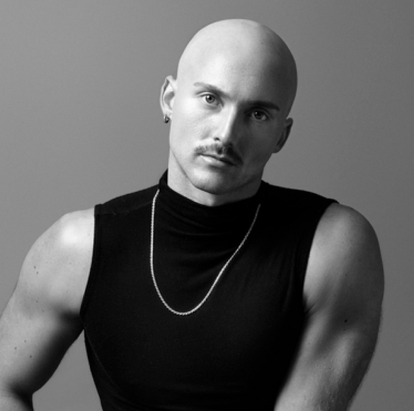

Introduction
Within the queer community, digital spaces remain limited and sparce, places where belonging coexists uneasily. One such space is the app Grindr. From the start, Grindr facilitated encounters between gay men within a geographical radius. Yet, the platform’s design favoring clean, muscular, white men, fosters what Dr. J. Logan Smilges critiques as “rhetorical silence”:not only in within Grindr but silence around minorities and marginalized people. In doing so, they resist being fully seen, and in return gay men are creating an identity in a digital space that is meant to be open to all gay men..
Contemporary queer rhetorics alongside writing and digital pedagogy foreground tensions between visibility and safety, identity and institutional demands. Students in writing classrooms often balance authenticity with the need to conform, they learn to speak out or stay silent depending on the topic or how authenticity is examined by the dominant culture. Grindr’s design mirrors this tension. It nudges users toward editing their bios and curating their images while simultaneously acknowledging the parts of queer identity that must remain hidden for bodily, social, or emotional safety.
Takeaways for Readers
Within the queer community, digital spaces remain limited and sparce, places where belonging coexists uneasily. One such space is the app Grindr. From the start, Grindr facilitated encounters between gay men within a geographical radius. Yet, the platform’s design favoring clean, muscular, white men, fosters what Dr. J. Logan Smilges critiques as “rhetorical silence”:not only in within Grindr but silence around minorities and marginalized people. In doing so, they resist being fully seen, and in return gay men are creating an identity in a digital space that is meant to be open to all gay men..
Webtext Breakdown & Kairos Connection
This webtext situates itself at the intersection of queer rhetorics, digital technology, and pedagogical design. The tabs located within my Webtext form a dynamic rhetorical journey moving from spoken conversation to analytic unravelling, from method to reflection. Each tab represents a component of my interview with Dr. Smilges as I focus my attention on their scholarship within the realm of Rhetoric, Technology, and Pedagogy.

Featured Scholar: Dr. J. Logan Smilges
Dr. J. Logan Smilges, an associate professor at the University of British Columbia in the Department of English Language and Literatures, research at the nexus of queer/trans disability studies, the history of medicine, and rhetorical studies. Their first book, Queer Silence: On Disability and Rhetorical Absence (University of Minnesota Press, 2022), explores how silence operates not as absence, but as a strategic rhetorical modality for queer disabled subjects. They followed this with Crip Negativity (2023), a critique of liberal disability politics, pushing toward more expansive conceptions of disability liberation.
Smilges’s scholarly influence extends through numerous peer-reviewed articles, including “White Squares to Black Boxes: Grindr, Queerness, Rhetorical Silence” (Rhetoric Review, 2019), which parses how Grindr profiles mediate queer visibility through visual silence a key foundation for this project. Their work has earned prestigious honors the Lavender Rhetorics Award, Presidents Dissertation Award, Denise Haunani Solomon Teaching Award all signaling their innovative contributions to queer, trans, and disability rhetorics. With pronounced commitments to transfeminism, disability justice, and accessible pedagogy, they stand as a guiding voice for this project’s intersections of rhetoric and digital learning. Through the interview, Dr. Smilges speaks on these intersections in relation to silence, embodiment, digital spaces.
Connection To My Own Research
My doctoral thesis investigates queer rhetorics within Grindr, tracing how identity is composed, punctuated by constraints on self-representation. In dialogue with Smilges, I conceptualize these constraints as forms of rhetorical quieting what they describe through silence as resistance. In our interview (see Transcript tab), Smilges remarks, “those blank or chest-only profile pictures enact a politics of refusal” (Transcript, line 142), positioning silence as a rhetorical strategy that protects and asserts non-normative embodiment.
Excerpt – Visual Rhetoric:
“In their recently published book, Queer SilenceIn their recently published book, Queer Silence: on disability and rhetorical absence author J. Logan Smilges (2022), defines the importance of visual rhetoric that is specifically within Grindr’s app: Visual rhetoric is a broad category that contains both “the cultural practices of seeing and looking, as well as the artifacts produced in diverse communicative forms and media. As it pertains to this chapter, visual refers to both the act of seeing and the artifacts that are seen, considering that users on Grindr are both witness to others’ profiles and the objects of other gazes. (Smilges, 2022, p. 73) Smilges takes an approach to identifying not only the visual rhetoric within the app itself, but they stress the importance of “diverse communicative forms and media” which can be seen through their advertisements. Smilges expands even more as they identify visual rhetoric going beyond just one image but aspects of Rhetorical Theory in “light of the persistent problem of the image” (p. 75).1. "On Grindr, one cannot help but wrestle with the bodyminds of the users, both individually and collectively, who are not only operating the accounts but visibly plastered all over the screen." (79).
Excerpt – Digital Rhetoric:
Another way of looking at a form of digital rhetoric, Smilges offers an alternative view of men within the app connecting to identities. Smilges states (2019), “interacting with a digital world that both acknowledges the presence of a queer community and simultaneously conceals the identities of its community members” (Smilges, 2019, para. 4). Instead of focusing mainly only on the identities we see within the app, there is another perception of how those identities are in real life, outside of the app. The rhetorical implication of this idea focuses on how the app “conceals the identities of its community members” (para. 4). To Smilges’ point, users may see men within their community but just because the pictures represent them as “fit” or “muscular” on the app doesn’t mean they look the same outside of the app. Simultaneously, Smilges expands on the notion of identity by pointing out that “certainly, some users may choose to feature their abs or hamstrings because they believe those parts are their most attractive features, the features most likely to attract someone for a quick hookup” (Smilges, 2022, p. 70).1. "On Grindr, one cannot help but wrestle with the bodyminds of the users, both individually and collectively, who are not only operating the accounts but visibly plastered all over the screen." (79).
Conclusion
This webtext aspires to not only focus on the rhetorical silence emlpoyed by Dr. Smilges, but how that connects to digial spaces, technology, and writing. By centering Smilges’s scholarship and my own research, this project signals toward pedagogies that honor queerness, and disability.